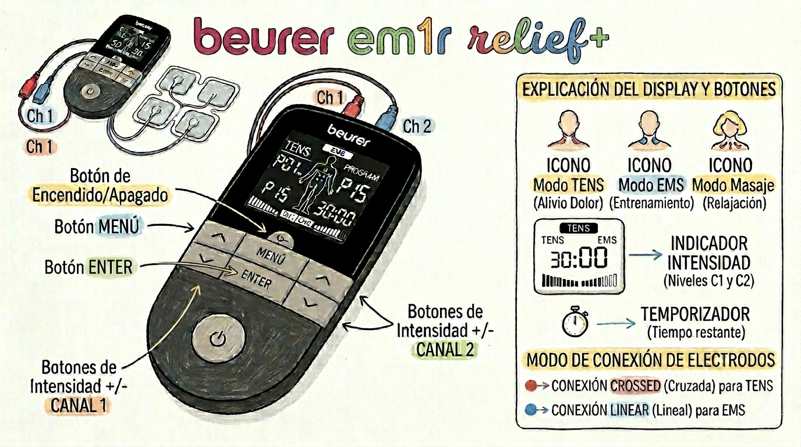
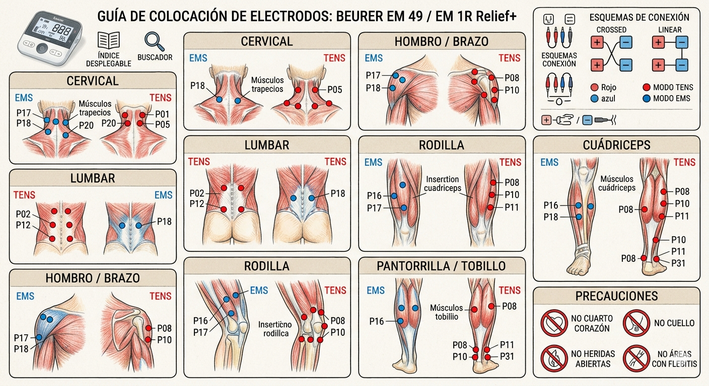

1. Modos de Funcionamiento
El beurer EM1R Relief+ dispone de tres funciones básicas que pueden combinarse según la necesidad:
- TENS (Estimulación Nerviosa Transcutánea): Bloquea la transmisión del dolor a través de las fibras nerviosas. Ideal para dolores crónicos y agudos.
- EMS (Estimulación Muscular Eléctrica): Provoca contracciones musculares para fortalecer (entrenamiento), tonificar o acelerar la recuperación post-esfuerzo.
- Masaje: Simula un masaje real mediante impulsos eléctricos para relajar músculos tensos y reducir la fatiga.
2. Guía de Uso Paso a Paso
- Preparación: Limpie la zona de la piel. Conecte los cables a los electrodos y pegue estos a la piel (ver Mapa de Colocación).
- Encendido: Pulse el botón de encendido.
- Selección de Modo: Pulse MENU para navegar entre TENS/EMS/MASSAGE.
- Selección de Programa: Use las flechas para elegir el número de programa (ej. P01). Confirme con ENTER.
- Intensidad: El tratamiento no comienza hasta que suba la intensidad con los botones +/-.
- Doctor's Mode: Vea cómo activar su configuración personalizada en la sección inferior.
3. Interfaz y Botones
Como se muestra en la imagen dispositivo.png, el aparato cuenta con una pantalla retroiluminada en negativo para facilitar la lectura.

Nota importante: Los conectores de los canales se encuentran en la parte superior del chasis.
4. Colocación de Electrodos
La eficacia depende totalmente de la posición. Consulte la imagen colocacion.png para las cuadrículas exactas por zona corporal.

Programas TENS (Dolor)
| Prog. | Indicación | Colocación |
|---|---|---|
| P01-P02 | Cervicales / Cefaleas | Ver Cuello |
| P03-P04 | Espalda / Lumbar | Ver Lumbar |
| P05-P06 | Hombro / Brazo | Ver Hombro |
| P07-P08 | Dolor Articular / Artritis | Ver Rodilla |
| P09-P10 | Neuralgias | Zona afectada |
| P11-P12 | Dolor Menstrual | Vientre bajo |
| P13-P15 | TENS Personalizado | Según dolor |
Programas EMS (Músculo)
| Prog. | Objetivo | Colocación |
|---|---|---|
| P01-P06 | Extremidades superiores | Ver Brazo |
| P07-P12 | Abdominales / Lumbar | Ver Tronco |
| P13-P20 | Extremidades inferiores | Ver Muslo |
| P21-P25 | Capilarización / Calentamiento | Varios |
| P26-P35 | EMS Personalizado | Varios |
Programas MASAJE (Relajación)
| Prog. | Tipo de Masaje |
|---|---|
| P01-P05 | Masaje por golpeteo |
| P06-P10 | Masaje por amasamiento |
| P11-P15 | Masaje por vibración |
| P16-P20 | Masaje relajante |
Doctor's Mode
Es una función especial que permite al médico o fisioterapeuta fijar un programa específico para que el paciente solo tenga que encender el aparato y subir la intensidad.
Para activar: Seleccione su programa, ajuste parámetros y mantenga pulsado ENTER al iniciar. El símbolo del candado indica que el modo está activo. Para desactivar, repita el proceso de pulsación larga en ENTER.